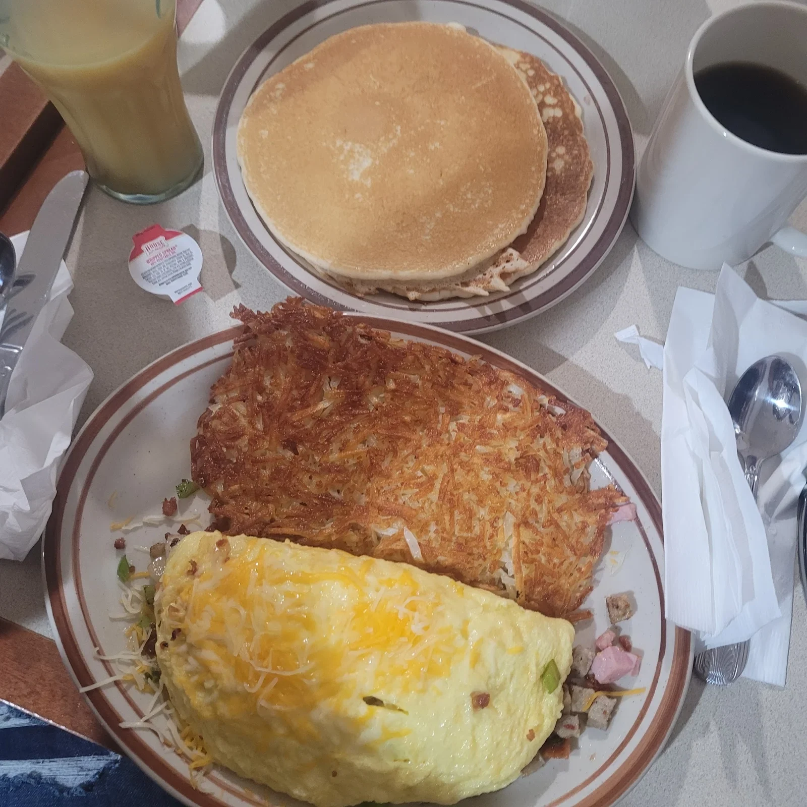
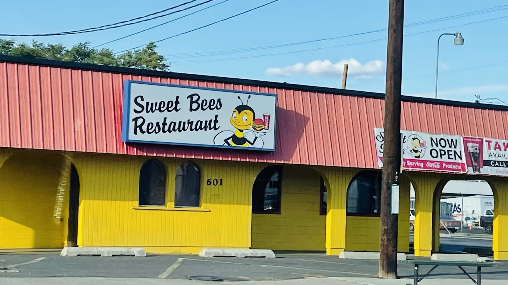
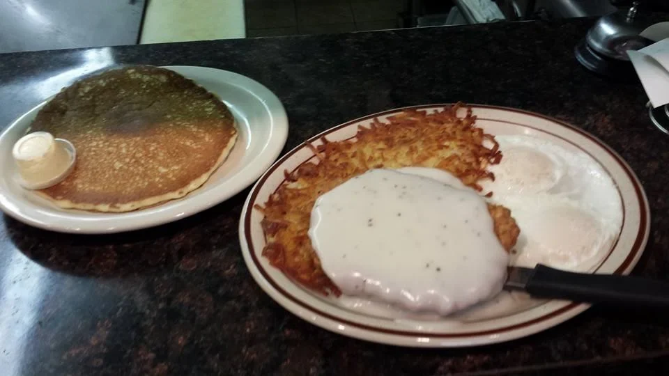
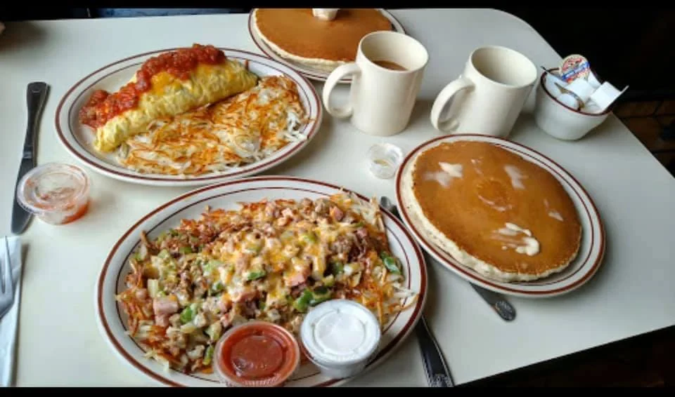

A savory breakfast favorite shown on the published menu.
A HAPPY LITTLE STOP IN YAKIMA, WAGood mornings.
Good mornings.
Great company.
Pancakes, omelets, and a place at the table.
Come hungry to Sweet Bees.
MON–SAT · 7 AM–2 PM
601 FRUITVALE BLVD · YAKIMA
601 FRUITVALE BLVD · YAKIMA

BREAKFAST
& LUNCH☀
& LUNCH☀
GOOD FOOD.GOOD MOOD.YAKIMA, WASHINGTON.
YOUR FRUITVALE BREAKFAST PLANSPull up a chair.
Give us a buzz: (509) 426-2998 ↗
Pull up a chair.
Stay for a bite.
Sweet Bees is a breakfast and lunch restaurant on Fruitvale Boulevard in Yakima. Think familiar diner favorites: pancakes, French toast, omelets, and savory plates.
Meet a friend over breakfast, make it a family lunch, or stop in before the rest of your day. The table is a good place to start.



FROM GOOGLE REVIEWSA little love
A little love
from the table.
G4.7★★★★★624 reviews on Google ↗
“Absolutely adorable little diner!”
Brin GGoogle review excerpt
Google ↗“Food was really good. Generous portions.”
Craig NGoogle review excerpt
Google ↗“The service was super friendly and the food came out quick!”
Taylor WGoogle review excerpt
Google ↗Selected excerpts, not the full range of reviews. Rating and count checked October 19, 2026; they may change. Read all reviews on Google ↗
HOURS & LOCATIONFollow the buzz.
Follow the buzz.
Find your table.
YAKIMA, WASHINGTON · PACIFIC TIME601 Fruitvale Blvd
Yakima, WA 98902 ↗(509) 426-2998 ↗
Yakima, WA 98902 ↗(509) 426-2998 ↗
Monday7:00 AM – 2:00 PM
Tuesday7:00 AM – 2:00 PM
Wednesday7:00 AM – 2:00 PM
Thursday7:00 AM – 2:00 PM
Friday7:00 AM – 2:00 PM
Saturday7:00 AM – 2:00 PM
SundayClosed
Pacific Time. Holiday hours and availability may vary; call to confirm.
GOOD TO KNOWA few
A few
good questions.
When can I visit?
The current listing shows Monday through Saturday, 7 AM to 2 PM, with Sunday closed. Call for holiday hours.
Where are you in Yakima?
Sweet Bees is at 601 Fruitvale Boulevard, Yakima, WA 98902. Tap Get directions for the route.
Where can I check prices or ask about ingredients?
Call (509) 426-2998 for current pricing, availability, ingredient questions and dietary needs before ordering.
SEE YOU ON FRUITVALEYour next
Let’s get you here ↗